Oslo City Highlights
A relaxed spin through the heart of Oslo — Aker Brygge, the Opera House, Vigeland Park and the Royal Palace. Perfect for first-timers.
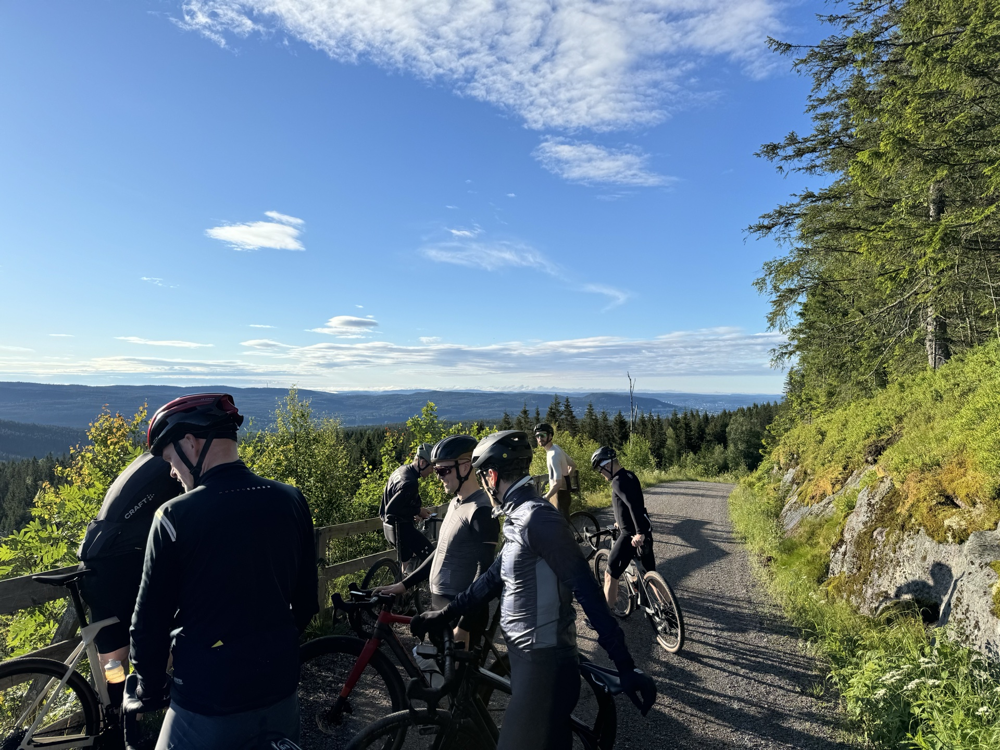
Guided gravel bike tours through the city, fjord hills, and forest trails of Oslo — for every pace and every rider.
Private, fully guided cycling tours through Oslo and its surroundings — crafted for those who want to experience the city properly, without the effort of figuring it out alone.
Six private guided bike tours in Oslo — city rides, fjord routes, forest gravel, a specialty coffee tour and a Nordic architecture tour. Your guide picks you up at your hotel.
A relaxed spin through the heart of Oslo — Aker Brygge, the Opera House, Vigeland Park and the Royal Palace. Perfect for first-timers.
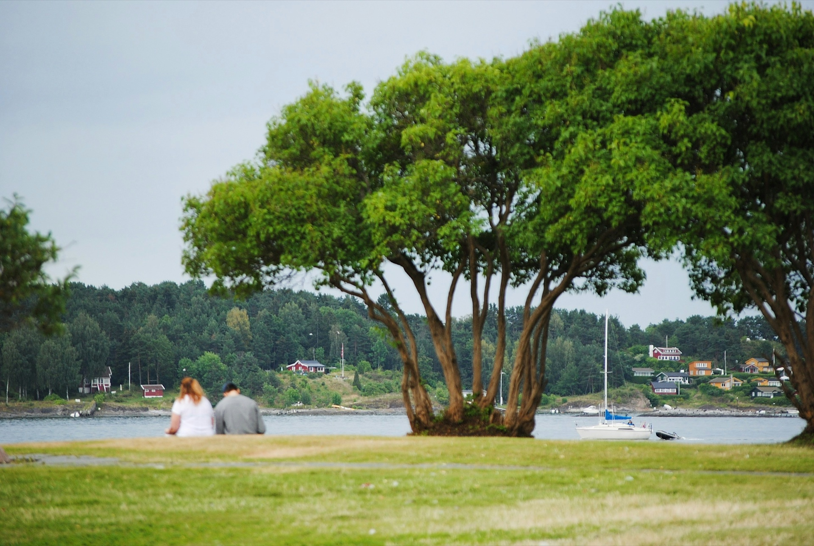
RoadSweep along the waterfront to the museum peninsula, past Viking ships and the Folk Museum, with stunning fjord panoramas throughout.
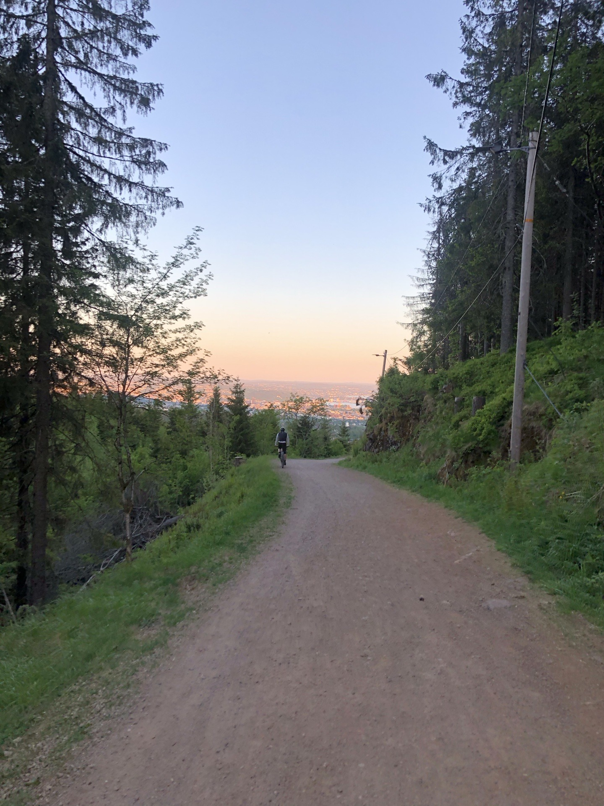
GravelEscape the city into the vast Marka forest. Rolling gravel roads through pine and birch, past mirror-still lakes and wildlife.
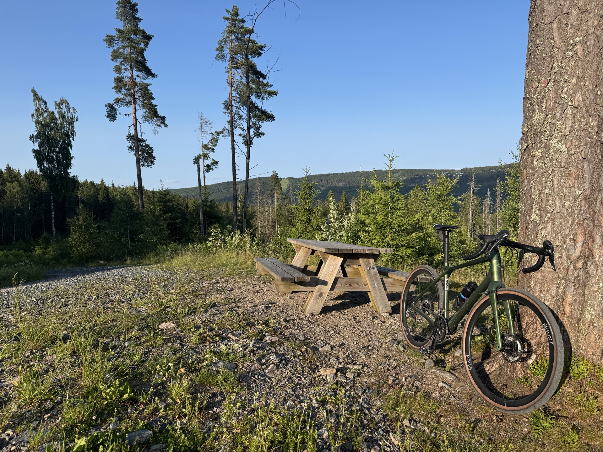
GravelA full-day adventure deep into the Marka wilderness. Long sustained climbs, rocky forest roads and remote lakes. For those who want the full day.
Oslo may be the coffee capital of the world. Find out why — four legendary cafés, one great ride through Grünerløkka and Frogner.
Arne Korsmo, Nordic functionalism, Villa Stenersen, Planetveien 12. A ride through the buildings that defined modern Norwegian architecture.
Local riders who know every trail, climb and café stop in Oslo.
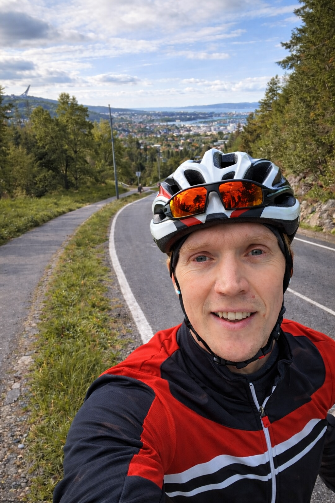
Born and raised in Oslo, Eivind has been riding the roads and forest tracks of the city for over 30 years. An avid runner and biker, he knows the routes of Oslo like the back of his pocket — and loves sharing every one of them.
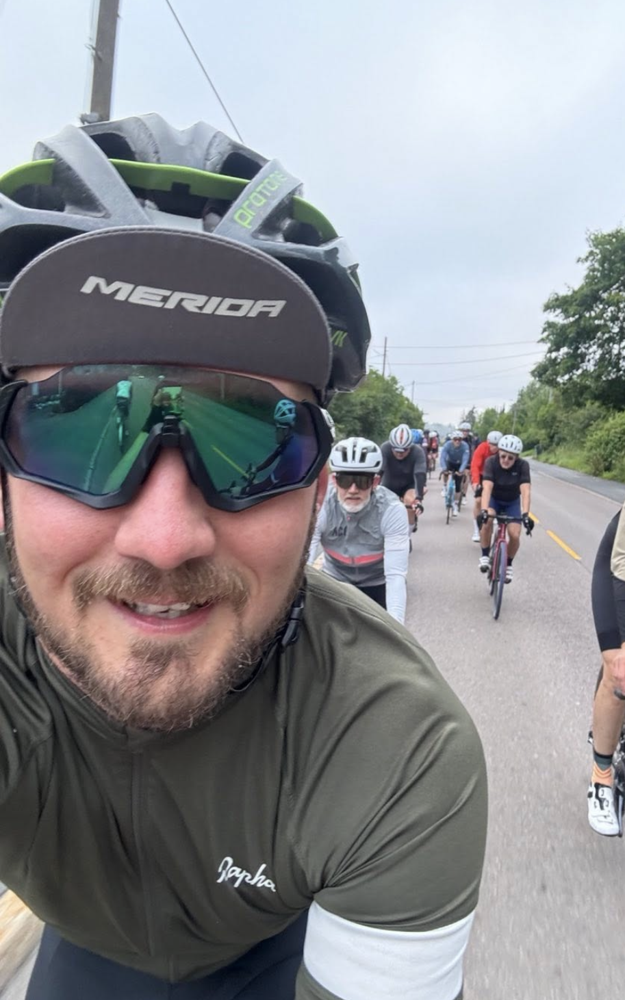
Haakon has lived in Oslo for over 10 years and spent countless hours in the city's forests and on its roads. A passionate gravel bike enthusiast, he is something of an expert on Nordmarka — its trails, its seasons, and its secrets.
Fill in the form and we'll get back to you within 24 hours to confirm your booking and share all the details.
This is Oslo at its most welcoming — a leisurely ride through the beating heart of the Norwegian capital. We keep the pace relaxed so there's always time to pause, take photos and soak it all in.
Starting at the City Hall square (Rådhusplassen) by the waterfront, we roll along the harbour promenade past Aker Brygge's restaurants and sailboats before sweeping east to the Oslo Opera House. The building's sloping marble roof doubles as a public promenade — a perfect first stop. From there we follow the fjord path through the emerging Fjord City district before heading inland through the quiet streets of St. Hanshaugen.
The second half takes us through Frogner and into Vigeland Park, home to Gustav Vigeland's extraordinary collection of 200-odd bronze and granite sculptures. We finish the loop past the Royal Palace gardens and back down Karl Johans gate — Oslo's main boulevard — to the start.
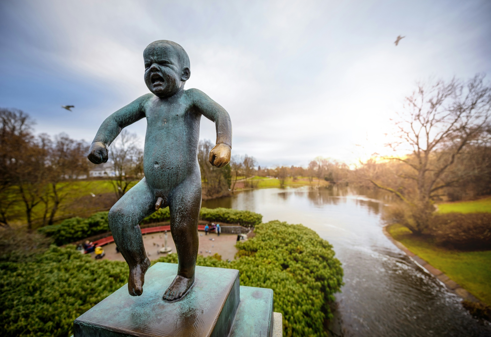
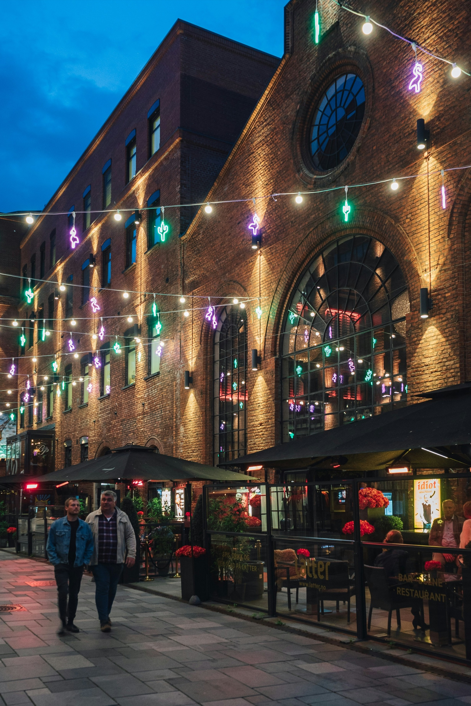
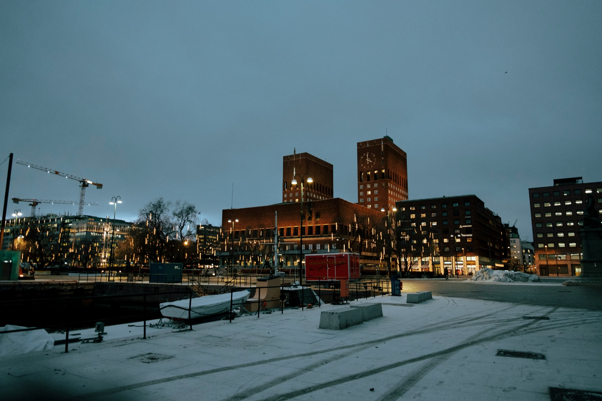
Just west of the city centre lies Bygdøy — a quiet, forested peninsula that juts into the Oslofjord and holds some of Norway's most treasured museums. This route combines fjord scenery with culture and a genuine sense of escape, all within a short ride of downtown Oslo.
We depart from Aker Brygge and follow the waterfront cycle path westward along Frognerkilen bay, passing rowing clubs and bathing beaches before climbing gently onto the peninsula. The roads here are quiet and lined with chestnut trees, and the pace lets you appreciate the surroundings.
We pass by the Norwegian Folk Museum, the Viking Ship Museum and the Fram Museum — home to the world's best-preserved polar exploration vessel. You won't be going inside (unless you wish to on your own time), but your guide will bring the history alive as you ride past. The return leg hugs the peninsula's southern shore, with open fjord views stretching south toward Nesodden.
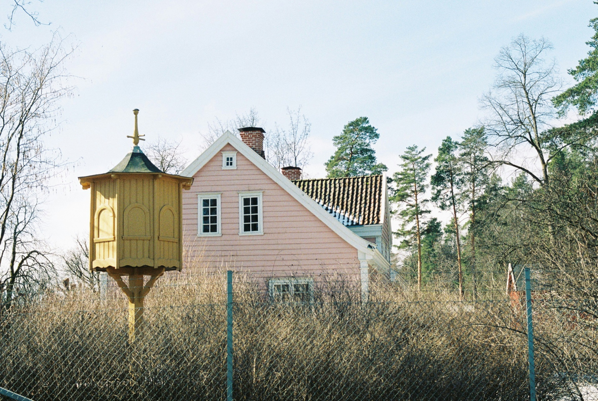
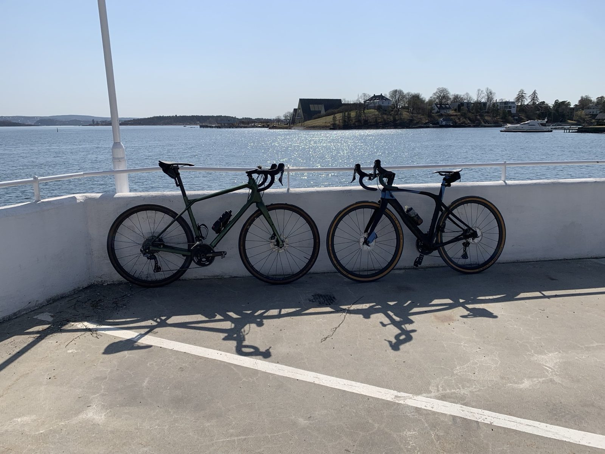
Ring 4 is one of Oslo's great cycling institutions — a classic loop through Nordmarka that local riders have been doing for generations. The name refers to the fourth ring of trails radiating out from the city, and it's the one that strikes the perfect balance between wild forest riding and manageable distance.
We start at Sognsvann lake, where the forest begins immediately — getting there by T-bane or meeting directly depending on your starting point. The route heads north through stands of pine and silver birch, following gravel forest roads that are smooth enough to roll at speed but varied enough to keep things interesting. Expect a couple of proper climbs — both well rewarded with long, flowing descents.
Halfway around you'll pass Kikutstua, a traditional Norwegian mountain cabin that serves waffles and coffee. We stop here for a well-earned break before looping back south through the Maridalen valley, one of the few agricultural landscapes left within Oslo's city limits, and finishing back at the lake.
This is Nordmarka as few visitors — and even many Osloites — ever get to see it. A full-day push into the deep forest, far beyond the day-tripper trails, through a landscape of remote lakes and ancient logging roads that haven't changed in a century.
We head north from Sognsvann into sustained climbing through the trees, then thread between lakes — Store Sandungen, Fyllingen, Hakkloa — on gravel roads that shift between fast and open and slow and rocky. The midpoint brings a long descent to a remote trailside cabin for lunch. The return takes a different line home: more climbing, more rocky stretches, more forest. By the end your legs will know about it. So will your face — from smiling.
There is a serious argument — made by serious people — that Oslo is the coffee capital of the world. This tour visits the four cafés that make the case: Tim Wendelboe in Grünerløkka, whose roastery became a global pilgrimage site after he won the World Barista Championship in 2004; Supreme Roastworks at Vulkan by the Akerselva river; Fuglen in Frogner, a mid-century room that spawned outposts in Tokyo and New York; and Java, Oslo's original specialty coffee institution, open since 1997.
We connect them by bike through the city's finest coffee neighbourhoods — Grünerløkka's murals and market streets, the river path along Akerselva, the elegant calm of Frogner — stopping properly at each place. Coffee and a pastry at every stop are included.
Four buildings by Arne Korsmo — and one by his most gifted student — trace the full arc of Norwegian functionalism from its radical 1930 debut to its thoughtful, humanist maturity. Your guide connects the ideas as you ride between them through the quiet residential hills west of the city centre.
Oslo Bike Tours offers private guided bike tours in Oslo for small groups of up to 8 people. Tours include Oslo City Highlights, the Bygdøy Peninsula fjord tour, Nordmarka Forest Ring 4, and the Epic Marka Endurance ride. All tours include hotel pickup and are led by local guides Eivind and Haakon.
Yes. Your guide picks you up directly at your hotel in Oslo — no need to find a meeting point or navigate to a start location yourself.
Yes. We offer two gravel routes: Nordmarka Forest Ring 4, a 45 km loop through pine and birch forest north of the city, and Epic Marka Endurance, a full-day 85 km ride deep into the Nordmarka wilderness.
Tours are optimised for guests riding their own bike, but we offer gravel bike and e-bike rentals. Just mention it when you make your enquiry and we'll arrange everything.
All tours include a private guide, hotel pickup and full route planning. An optional café stop is available on all routes. Bike rental is available as an add-on. Bikes and helmets are not included in the base price.
Yes. Oslo City Highlights and the Bygdøy Peninsula tour are suitable for all riders with no significant hills. The Nordmarka Forest and Epic Marka tours suit recreational riders and above.